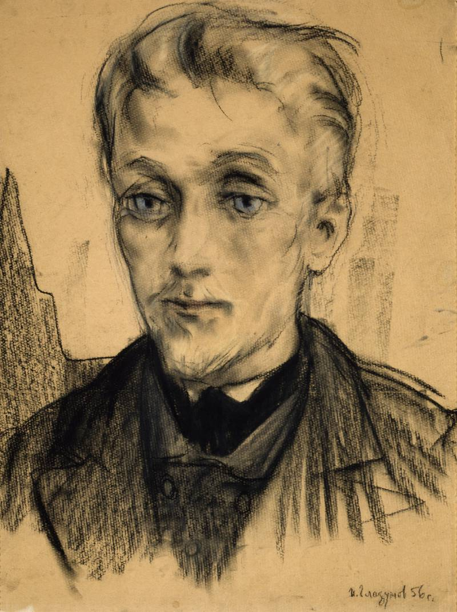

<!DOCTYPE html(prefix="og: http://ogp.me/ns#")>
<html>
  <head>
    <meta charset="utf-8"/>
    <meta name="viewport" content="width=device-width, initial-scale=1.0"/>
    <meta property="og:type" content=""/>
    <meta property="og:title" content="«Да как ты смеешь?!» ⚒︎ Чернотроп"/>
    <meta property="og:description" content="Рубрика, в которой самоучка, профан Артём Сошников бесстыдно скрещивает русскую классику с современностью."/>
    <meta property="og:image" content="http://chernotrop.reviews/img/how-dare-og.jpg"/>
    <link href="https://fonts.googleapis.com/icon?family=Material+Icons" rel="stylesheet"/>
    <link rel="stylesheet"/><!-- Yandex.Metrika counter --> <script type="text/javascript" > (function(m,e,t,r,i,k,a){m[i]=m[i]||function(){(m[i].a=m[i].a||[]).push(arguments)}; m[i].l=1*new Date();k=e.createElement(t),a=e.getElementsByTagName(t)[0],k.async=1,k.src=r,a.parentNode.insertBefore(k,a)}) (window, document, "script", "https://mc.yandex.ru/metrika/tag.js", "ym"); ym(56951962, "init", { clickmap:true, trackLinks:true, accurateTrackBounce:true, webvisor:true, trackHash:true }); </script> <noscript><div></div></noscript> <!-- /Yandex.Metrika counter -->
    <title>«Да как ты смеешь?!» ⚒︎ Чернотроп</title>
  <link href="./css/style.bundle.css" rel="stylesheet"></head>
</html>
<body class="body_dark">
  <header class="header header_dark">
    <div class="header__logo">
      <div class="logo logo_dark"><a class="logo__link" href="/">ЧЕРНОТРОП</a></div>
    </div>
    <div class="header__menu" id="modeValue"><a href="menu.html">
        <svg xmlns="http://www.w3.org/2000/svg" width="24px" height="24px" viewBox="0 0 24 24">
          <path d="M0 0h24v24H0z" fill="none"></path>
          <path class="icon_white" d="M3 18h18v-2H3v2zm0-5h18v-2H3v2zm0-7v2h18V6H3z"></path>
        </svg></a>
    </div>
  </header>
  <section class="main">
    <div class="main__description">
      <h3>Да как ты смеешь?!</h3>
      <p>рубрика, в которой самоучка, профан артём сошников бесстыдно скрещивает русскую классику с современностью.</p>
      <p>именно так выглядели бы сочинения, если б школьников не заставляли заучивать мнения наизусть.</p>
    </div>
    <nav class="main__menu"><a class="main__menu-item" href="index.html" target="blank">главная</a><a class="main__menu-item main__menu-item_active" href="how-dare.html">да как ты смеешь?!</a><a class="main__menu-item" href="http://ttttt.me/blacktrope" target="blank">telegram-канал</a><a class="main__menu-item" href="contacts.html">контакты</a></nav>
  </section>
  <section class="how-dare"><a class="how-dare__col" href="how-dare-idiot.html">
      <div class="how-dare__pic"></div>
      <div class="how-dare__content">
        <h3>«Идиот» Фёдора Достоевского</h3>
        <p>Князь Мышкин — герой волны неоромантизма, которая скоро придёт и в Россию. Но сам роман читать не будут.</p>
      </div></a><a class="how-dare__col" href="how-dare-karenina.html">
      <div class="how-dare__pic"></div>
      <div class="how-dare__content">
        <h3>«Анна Каренина» Льва Толстого</h3>
        <p>Время идёт, роман по-прежнему не оставляет читателя равнодушным. Про Левина потихоньку забывают.</p>
      </div></a><a class="how-dare__col" href="#"></a><a class="how-dare__col" href="#"></a></section>
<script type="text/javascript" src="./js/bundle.js"></script></body>